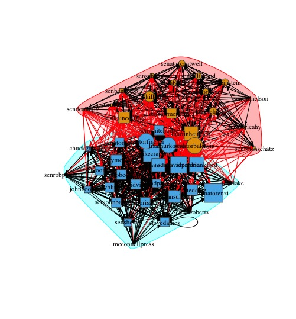

2018-04-19 Code Source
Network Practice
Introduction
This interactive network graph below shows the following relationship between 45 U.S Senators on Twitter.The size of symbols reflects the fans number of a senator. And the symbols and colors are specified by gender and party of those senators.
Analysis
There are total 990 edges in the network, meaning there are 990 followed and following relationship between the 45 U.S. senators.The senator with Twitter handle “senatorenzi” has the most followers. And the senator whose Twitter handle is “lisamurkowski” follows the most senators. (31).The node of Lisa Murkowski has the highest betweenness at 109.10, which means that most nodes should go through it to reach all the others. And the reciprocity of the network is 0.518, meaning that only half of the nodes are reciprocal nodes, from which we can see the network is not interactive enough.
Doing community detection by using membership functoin, the nodes are seperated into two groups, one containing 27 and the other including 18. But if we divide the nodes by party, it is clearly shown that 19 of the senators are from Democrat and 26 are from Republican. Though with a little bit difference, the result of computer's calculation is mostly closed to the fact.
